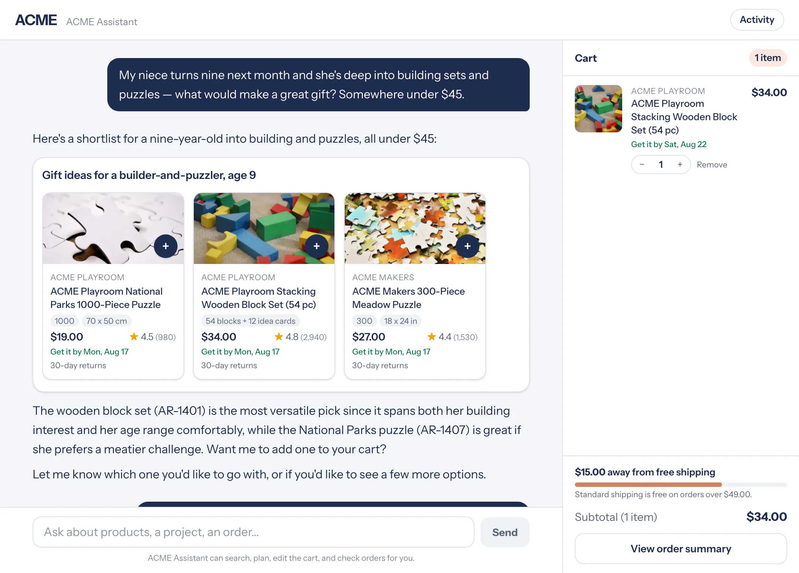

Claude 위에서 쇼핑 에이전트를 운영하는 리테일러들은 장바구니 규모가 최대 35% 커지고, 구매 완료율은 최대 60% 높아지는 것을 확인했습니다.
세계 최대 리테일러, 마켓플레이스, 이커머스 플랫폼, 여행 기업들 중 다수가 Claude로 쇼핑을 더 쉽게 만들어주는 에이전트를 만들고 있습니다. Shopify, Priceline을 비롯한 여러 엔터프라이즈 고객사는 소비자가 일상어로 원하는 것을 검색하고, 찾고, 비교하고, 구매할 수 있게 해주는 에이전트를 운영하고 있습니다.
오늘 저희는 Claude 위에서 커머스 에이전트를 만들 수 있도록 돕는 블루프린트를 공개합니다. 여기에는 엔지니어링 팀이 며칠 안에 커머스 에이전트를 가동할 수 있도록 필요한 하니스(harness), 패턴, 가드레일이 담겨 있으며, 리테일·여행·통신·티켓팅 플랫폼을 위한 쇼핑 에이전트와 머천트 에이전트의 레퍼런스 구현도 포함되어 있습니다. 시작을 돕는 Claude Code 플러그인도 함께 제공됩니다.
이 코드는 Claude API, Amazon Bedrock, Microsoft Foundry, Google Cloud Vertex AI 등 이미 Claude로 개발 중인 환경 어디에나 배포할 수 있습니다. 또한 Accenture, Mastercard, Visa와 같은 저희의 솔루션·에코시스템 파트너와 함께 작업할 수도 있는데, 이들은 고객사와 머천트 커뮤니티가 이 블루프린트를 활용할 수 있도록 저희와 협력하고 있습니다.
이 블루프린트는 오늘부터 이용 가능하며, 각 버티컬별 라이브 데모와 어떻게 만들어졌는지에 대한 엔지니어링 딥다이브도 연말 성수기 시즌 준비 시점에 맞춰 함께 제공됩니다.
이 저장소에는 Messages API, Agent SDK, 또는 Claude Managed Agents(베타)로 만들 수 있는 쇼핑 에이전트와 머천트 에이전트의 완전하고 동작하는 구현이 담겨 있습니다. 코드를 한 줄도 작성하기 전에 셀프 가이드 데모로 직접 동작을 확인해볼 수 있고, 이후 Claude Code와 함께 작업하며 여러분의 카탈로그, 정책, 브랜드 등에 맞게 커스터마이즈할 수 있습니다.

쇼핑 에이전트는 여러분의 앱이나 웹사이트 안에 상주합니다. 블루프린트에는 카탈로그, 장바구니, 체크아웃, 고객 선호도, 주문 이력을 위한 통합 지점이 포함되어 있으며, 결제는 기존 체크아웃이든 에이전틱 결제 제공자든 여러분이 선택할 수 있도록 남겨둡니다.
고객이 "아이 둘과 함께하는 주말 캠핑을 위한 텐트, 침낭, 스토브가 필요해"라고 말하면 에이전트가 그 뒤를 이어받습니다. 에이전트가 할 수 있는 일은 다음과 같습니다.
이 에이전트에는 가격과 상품을 실제 카탈로그 데이터로 제한하도록 설계된 가드레일이 있으며, 조작적인 업셀 패턴을 피합니다. 저장소 안에서 이 기능들은 카탈로그 검색, 멀티 아이템 플래닝, 딥 리서치, 개인화, 고객 케어, 대화 내 UI를 위한 스킬과 도구로 구현되어 있습니다.
머천트 에이전트는 매장을 운영하는 사람들을 지원합니다. 사용자가 "지난 시즌 재고를 정리하려면 무엇을 할인해야 할까?"라고 물으면, 자신의 데이터를 바탕으로 답을 받을 수 있습니다. 에이전트가 할 수 있는 일은 다음과 같습니다.
에이전트가 선제적으로 변경을 제안하면, 실제로 반영되기 전에 사람이 승인합니다. 즉 사용자가 최종 결정권을 가지면서도 에이전트가 매장을 계속 살피게 됩니다. 저장소 안에서 이 기능들은 매출 분석, 카탈로그·재고 관리, 마케팅·프로모션, 차트나 대시보드 같은 포털 내 UI를 위한 스킬로 제공됩니다.
쇼핑객, 여행객, 구독자, 머천트를 상대하는 기업들이 Claude 위에서 에이전트를 만들고 운영하고 있습니다. Claude로 커머스 에이전트를 만드는 것에 대해 이들이 남긴 이야기는 다음과 같습니다.
"AI는 커머스를 근본적으로 바꿔놓겠지만, 신뢰는 모든 거래의 중심에 남아야 합니다. 머천트들은 AI가 자사 고객과 어떻게 상호작용하는지에 대해 더 많은 통제권을 원한다고 말합니다. Anthropic의 커머스 블루프린트에 대한 저희의 협력은 Claude의 지능과 Visa 네트워크의 신뢰, 보안, 글로벌 도달력을 함께 결합해, 머천트가 사업을 이끄는 고객 관계를 유지하면서도 더 나은 고객 경험을 제공할 수 있도록 돕습니다."
Jack Forestell, Chief Product and Strategy Officer, Visa
"신뢰는 커머스의 통화이며, 에이전틱 시대에는 그 중요성이 더욱 커집니다. Anthropic의 커머스 블루프린트와 함께 저희는 머천트가 Claude로 자신만의 에이전트를 만들어 성장을 이끌 수 있도록 돕고 있습니다. AI 혁신을 신뢰할 수 있는 결제·커머스 인프라와 결합함으로써, 소비자와 머천트, AI 에이전트를 안전하고 매끄럽게, 그리고 대규모로 연결하는 데 기여하고 있습니다."
Sherri Haymond, Executive Vice President, Global Head of Digital Commercialization, Mastercard
"커머스 에이전트는 오늘날 소비자가 기대하는 개인화되고 지능적인 고객 경험을 제공하려는 조직들에게 빠르게 핵심 역량으로 자리잡고 있습니다. 저희의 최신 리서치에 따르면 85%가 이제 AI 에이전트와의 협업에 열려 있으며, 거의 4명 중 3명은 자신을 대신해 구매를 진행하는 데 있어 개인 AI 에이전트를 가장 친한 친구보다 더 신뢰한다고 답했습니다. 이는 단순한 쇼핑 방식의 변화 이상입니다. 에이전틱 커머스는 무엇이, 언제, 어디서, 누구에 의해 구매되는지를 근본적으로 재구성하며 브랜드 가치의 규칙 자체를 다시 쓰고 있습니다. Anthropic의 커머스 에이전트 블루프린트는 조직이 배포를 가속하고 고객 만족, 충성도, 성장을 높이는 차별화된 경험을 구축할 수 있도록 돕는 검증된 출발점을 제공합니다. 여기에 Accenture의 깊은 리테일·소비재 전문성을 더하면, 고객이 컨셉에서 프로덕션으로 더 빠르게 나아가 에이전틱 AI의 가치를 실현하도록 도울 수 있습니다."
Kath Gramling, Global Consumer Goods, Retail and Travel lead, Accenture
"여행은 사람이 구매하는 것 중 가장 복잡한 축에 속합니다. 항공편, 호텔, 렌터카 등 수십 가지 옵션을 서로 견주어야 하죠. 저희 AI 어시스턴트인 Penny는 이 모든 것을 하나의 대화 안에서 탐색해 최선의 옵션과 최고의 가치를 찾아냅니다. 저희가 최신 세대의 Penny를 Claude 위에 구축한 이유는, 바로 이런 종류의 추론이 Claude 모델이 정말 잘하는 영역이기 때문입니다."
Cobus Kok, Vice President, AI Experiences, Priceline
"수백만 명의 소비자, 기업, 회계사가 Intuit 위에서 자신의 재무를 운영합니다. Anthropic 같은 파트너와 함께 일하면서 저희는 고객이 자신의 비즈니스에서 무엇이 바뀌고 있는지, 왜 바뀌고 있는지를 명확히 이해하고 완전한 확신을 가지고 행동할 수 있는 고도로 개인화된 경험을 만들고 있습니다. 저희는 Claude를 포함한 프런티어 AI 추론을 고유의 데이터, 역량, 인텔리전스, 인적 전문성과 결합해 고객의 다음 단계 번영을 이끄는 금융 인텔리전스 시스템을 만들고 있습니다."
Chris Kasten, Chief Architect and SVP of Engineering, Intuit
"저희는 머천트가 고객이 쇼핑하는 모든 곳에 있기를 원하며, 점점 더 그것은 에이전트와의 대화를 의미하게 됩니다. 저희는 Anthropic의 블루프린트 위에서 Catalog, UCP, Shop Sign-in을 통해 머천트의 스토어와 연결되는 레퍼런스 스토어프론트 구현을 만들고 있습니다. 머천트는 Claude를 사용해 고객이 상품을 찾고, 결제하고, 주문에 대한 질문에 답할 수 있도록 돕는 에이전트를 만들 수 있습니다."
Vanessa Lee, VP Product, Shopify
"커머스와 뛰어난 고객 경험에는 개인화가 필수인데, Klaviyo 위의 모든 브랜드는 어떤 팀도 손으로 다 처리할 수 없을 만큼 많은 고객 데이터와 의사결정 위에 놓여 있습니다. Claude는 그 간극을 메워, 소비자 선호와 성과 데이터를 매출을 이끄는 인사이트, 캠페인, 개인화로 바꿔줍니다. 그것이 저희가 Anthropic과 계속 함께 만들어가는 이유입니다. 에이전트가 복잡한 분석, 설계, 의사결정을 수행하고, 비즈니스는 고객을 기쁘게 하는 데 집중할 수 있습니다."
Andrew Bialecki, Founder and Co-CEO, Klaviyo
"Wix의 미션은 언제나 복잡한 기술을 사용자에게 단순하고 접근하기 쉽게 만드는 것이었습니다. 머천트에게 그것은 운영 복잡도를 더하지 않으면서 강력한 커머스 기능을 제공한다는 뜻이며, 에이전트는 그 자연스러운 다음 단계입니다. 저희 엔지니어들은 15분 만에 프롬프트를 받는 동작하는 커머스 에이전트를 확보했고, 이 파일럿은 Anthropic의 AI 역량과 Wix의 커머스 플랫폼, 그리고 SMB 커머스에 대한 깊은 전문성을 결합할 때의 잠재력을 보여주었습니다."
Dror Zalika, Head of Commerce, Wix
"저희 엔지니어들은 아무 장애물 없이 블루프린트를 바로 실행했고, 설정은 문서에 적힌 그대로 정확히 동작했습니다. 도구 반복 제한부터 프롬프트 캐싱까지 여기에 내재된 관행들은 저희가 Zomato 자체 에이전트를 만들며 익숙해진 바로 그것들이었습니다. 처음 Claude 위에 에이전트를 세우는 팀들은 몇 주간의 시행착오를 건너뛰게 될 것입니다."
Akhil Bansal, Senior Engineering Manager, Zomato
"저희 엔지니어들은 Anthropic의 블루프린트에서 나온 두 커머스 에이전트를 한 시간이 채 안 되는 시간 안에 로컬에서 실행했고, 첫 시도부터 라이브 대화가 동작했습니다. Claude Code 워크플로를 두 번 실행했더니 저희가 요청한 그대로 설계된, 서로 다른 두 개의 아키텍처를 얻었습니다. 처음부터 시작하는 팀에게는, 에이전트 스캐폴딩에 며칠이 걸리던 일이 몇 시간으로 줄어드는 셈입니다."
Ashley Nader, Staff Product Manager, Fetch
"저희가 Square에서 만드는 것 중 상당수는 판매자에게 시간을 되돌려주는 일이며, 에이전트는 그 능력을 크게 도약시켜줍니다. 저희는 매출, 인력, 재고를 지켜보다가 단순한 답이 아니라 실제 다음 행동을 제안하는 에이전틱 도구를 만들고 있으며, 그 과정에서도 판매자가 통제권을 유지하도록 합니다. 그 작업에서 가장 어려운 부분은 신뢰이고, Claude는 저희가 높은 기준을 지킬 수 있도록 돕습니다."
Willem Avé, Head of Product, Square
이 블루프린트는 오늘부터 이용할 수 있습니다. 더 알아보거나 데모 일정을 잡거나 여러분의 조직에서 어떻게 도입할지 논의하려면 영업팀에 문의하세요.
라이브 워크스루, 데모를 직접 보여드리고 커머스 빌더들이 Claude를 어떻게 최대로 활용할 수 있는지 다루는 웨비나에 등록해 딥다이브를 확인해보세요.